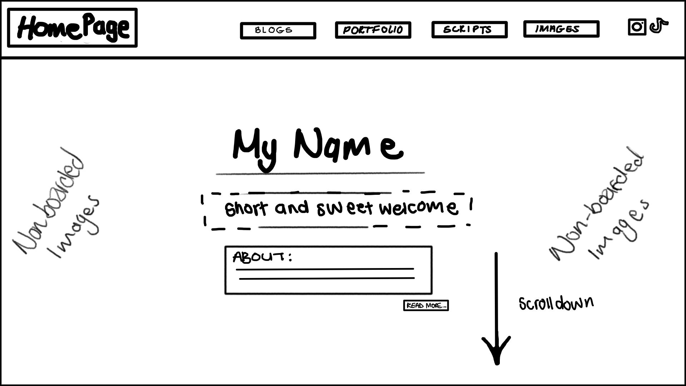
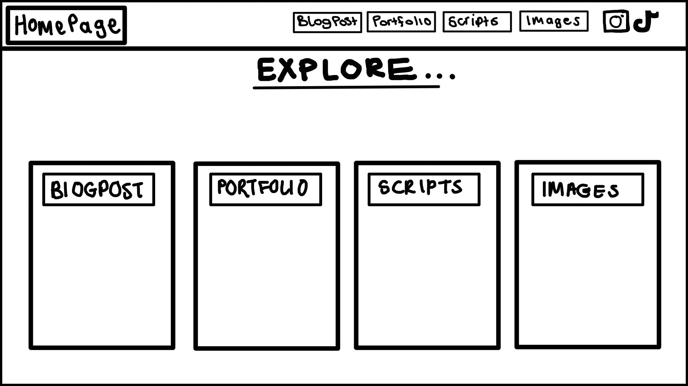

Week 2: Blog Post
How does it speak to the internet today?
Stuart Moulthrop’s "You Say You Want a Revolution? Hypertext and the Law of Media"
explores the evolution of hypertext and its implications for media,
culture, and communication. The title references both the digital revolution and Marshall McLuhan's laws of media.
Moulthrop’s essay is both a celebration and critique of hypertext’s revolutionary potential.
While he acknowledges its power to disrupt conventional media,
he also warns against overly utopian perspectives. His application of McLuhan’s
media laws provides a useful theoretical framework,
showing that every technological advancement carries unintended consequences.
By using McLuhan’s framework, Moulthrop effectively situates hypertext within a broader historical and theoretical context.
While hypertext has undeniably transformed media and communication,
Moulthrop’s analysis reminds us that revolutions are rarely as simple, or as liberating, as they first appear.
Wireframe Images and Design Concepts

I’m thinking of having a "floating homepage" where my name and greeting are centered with a brief welcome message.
The background would feature my original drawings or animations as a visual backdrop.
A fixed top dashboard will allow smooth navigation across all pages.

Scrolling down leads to the explore section. Viewers can interactively choose which section of the site to visit.
Each section includes a hover effect that previews its content—like blog snippets or images.

In the blog section, the fixed dashboard stays in place. The active page title shifts to the top-left corner.
Blog entries display previews, and clicking "read more" opens the full blog post.

For the portfolio page, the layout centers the title and includes a short explanation.
Visitors see previews of my animations and drawings with options to explore them further.
Reflections on Interaction and the WWW
Interaction, especially in the context of the World Wide Web,
is more than just clicking—it's about connecting, exchanging meaning, and sparking responses.
It shapes how people navigate content, experience design, and feel emotionally engaged.
To me, interaction is about bridging the user's intent with thoughtful design and functionality.
It’s about making someone feel something or learn something as they browse.
That’s the power of interaction on the web—empathy meets interface.